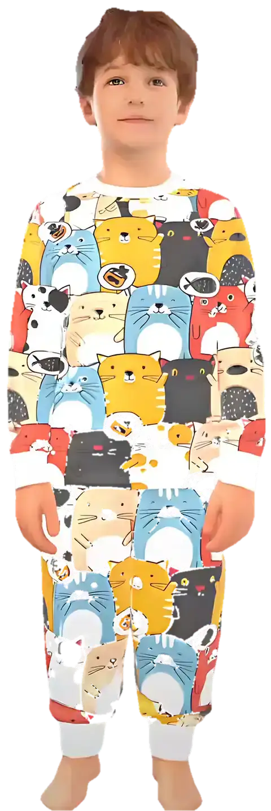

Erkek çocuk pijama takımları
Erkek çocuklar için pamuklu, rahat pijama takımları. Gezegenler, iş makineleri, polis arabaları, renkli kediler, ekose ve çizgili modeller; 2–12 yaş bedenler.
 Mavi Kareli Takım449 TL · 2–12 yaş
Mavi Kareli Takım449 TL · 2–12 yaş Kırmızı Ekose Takım449 TL · 2–12 yaş
Kırmızı Ekose Takım449 TL · 2–12 yaş Gezegenler Takımı449 TL · 2–12 yaş
Gezegenler Takımı449 TL · 2–12 yaş Polis Arabaları Takımı449 TL · 2–12 yaş
Polis Arabaları Takımı449 TL · 2–12 yaş Dama İş Makineleri Takımı449 TL · 2–12 yaş
Dama İş Makineleri Takımı449 TL · 2–12 yaş
Renkli Kediler Takımı449 TL · 2–12 yaş Mavi Çizgili Takım449 TL · 2–12 yaş
Mavi Çizgili Takım449 TL · 2–12 yaşSık sorulanlar
Çocuk pijama bedeni nasıl seçilir?
Bedenleri yaşa göre 2-3 yaştan 11-12 yaşa kadar sunuyoruz. Boy ölçüsüne göre: 2-3 yaş: 92–98 cm, 3-4 yaş: 98–104 cm, 4-5 yaş: 104–110 cm, 5-6 yaş: 110–116 cm, 6-7 yaş: 116–122 cm, 7-8 yaş: 122–128 cm, 8-9 yaş: 128–134 cm, 9-10 yaş: 134–140 cm, 10-11 yaş: 140–146 cm, 11-12 yaş: 146–152 cm. İki beden arasında kalırsanız büyük olanı seçin; manşetli paçalar boyu toparlar.
SESA KIDS pijamaları hangi kumaştan?
%100 pamuk, yumuşak interlok kumaş; tene dost, terletmeyen ve çok yıkamada formunu koruyan dokuma.
Kargo ne zaman gelir, ücreti ne kadar?
Siparişler 1–3 iş günü içinde kargoya verilir. 750 ₺ ve üzeri siparişlerde kargo ücretsizdir.
İade ve değişim yapabilir miyim?
Ürünü teslim aldıktan sonra 14 gün içinde, etiketi sökülmemiş ve kullanılmamış olarak iade edebilir ya da değiştirebilirsiniz.